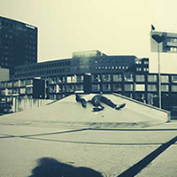
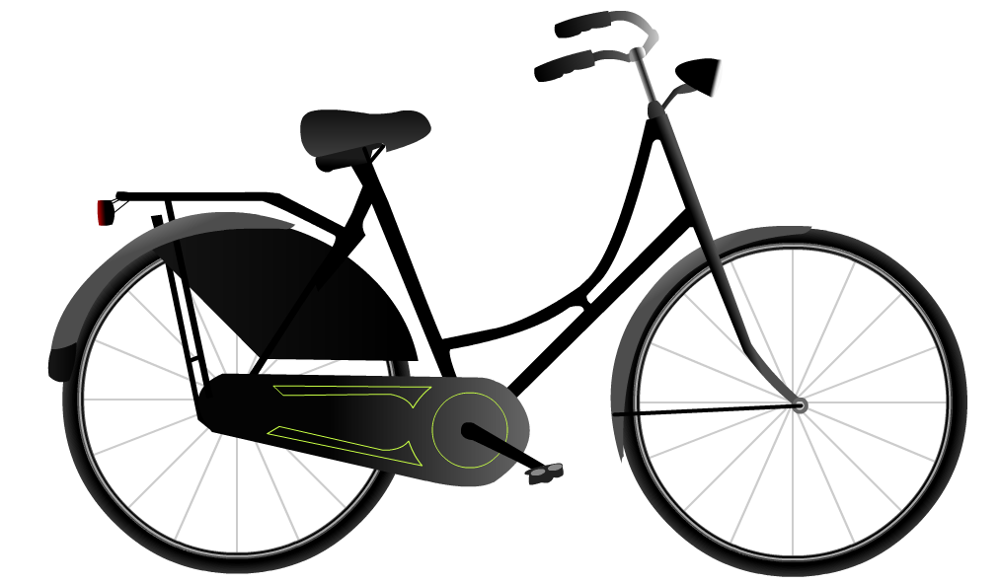
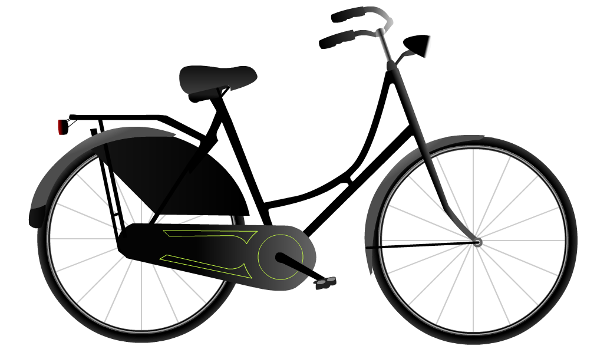

- WESTPOP
- MUSEON
- BAKKER BART
- HOTEL DU PARC
- CCI 
- PINHOLE

For fictional customer Westpop, a small Dutch music festival, my project group had to design and develop an intranet with a social touch. The challenge was to create a bigger affection between the direction and the employees. We figured that proper use of the word ‘team’ should do the trick. That includes a team page, social section and the option to share your music experiences.
Creating wireframes is like writing html. You take your content and put it on a certain place on the website. You see if that place works for that content and why it does(n't). I always draw paper wireframes before i start creating digital ones, just because it is a much faster way to find flaws in your page layout. For
 .
.
Another part of the project was to create a set of icons for the festival. These icons were to be used both on the website as at the festival itself. My part in this was to create the icons for the staff teams (t-shirts and team web page) and an icon for 'no bottles aloud'.
Westpop's intranet needed to become social. We made a minimalistic design, using a lot of white, combined with Westpop's visual identity.

 .
.
For my first school project, my project group was assigned to create an interactive, educational Flash application. This application needed to targe primary school kids, and teach them about way sound works. The best application made might be picked by Dutch museum "Museon" for actual use inside the museum.
Since the application needed to target children, we wanted it to have a cartoony look & feel. We illustrated all environments and objects ourselves, using Adobe Flash. This was my first contact with digital illustration, where i learned how to create illustrations using only basic shapes.
 
.

.
Another thing that was new for me during this project was animation. Just static objects wouldn't make much of an application, so some animation needed to be done. Using keyframes, scenes and actionscript, we created a story for the kids to walk through.
As one of my most challenging school projects, Bakker Bart was also the most fun to do. In this individual project I needed to pick my own fictional client to create a web application for. Because i wanted to get some experience in building websites for a retail company, i chose Bakker Bart, a famous Dutch sandwich store. I wanted to turn their online shop into a web application, so people can order their lunch on the go and then pick it up within a short while.
My first challenge was to design an interface that was quick and easy to use. As I had no experience in mobile interface design, this was a challenging process, since there were many new aspects that needed to be taken into account. Environment, Android guidelines, the size of a person's fingertop and much more.
The second challenge: Jquery Mobile. A javascript library that I had not worked with before. Using live page changes, swipes and slides was a bit hard to learn, but certainly most rewarding. That, combined with the standard headers and toolbars this library offered, my small ordinary website got the feel of a real mobile webapp.
In the summer of 2012 my parents invited me to bring them a visit on their holiday in France. When I drove into the small town where they stayed, Plombières les Bains, The first thing I noticed was a massive, old, abandoned building. I immediatly knew I had to go in there with my DSLR. Me and my brother discovered a broken window above a hidden backdoor and went inside. We found out it had been both a hotel and a school, and that we weren't the first to go in since it had been closed.s


 .
.
A leader is the intro to a tv-show. It should get you excited to keep looking at the show. Dutch DPI animation house challenged us to make a leader for their fictional tv-show 'Car Crash Investigation', using only objects we made ourselves. The only thing they gave us was a taxi. The concept of the video was that the world of the accident is set inside the words 'Car Crash Investigation'.
As I had a little experience in video editing, I decided to take on the responsibility for that part of the project. This also meant I had to choose what shots we were going to use and animate the camera movements for these shots.
With zero experience, our project group started to learn how to model using 3DS MAX. Starting with a traffic light, and ending with ice cream trucks & restaurants. After destroying seven mouses with a total of fourteen million clicks, our end products were starting to shape up.

You take one empty paint can, a piece of ducttape, some black paint, a needle, photo paper, some aluminum foil and one massive box of patience. Building your own photo camera and taking a pretty picture with it was one of the assignments during my photography minor at school. It taught us the basics of photograpy. Looking at the light, using a manual shutter (made of ducttape) and using chemicals to develop your photo. It taught me to carefully think about my composition, instead of just burst away for eight minutes with your digital camera.
. .
.